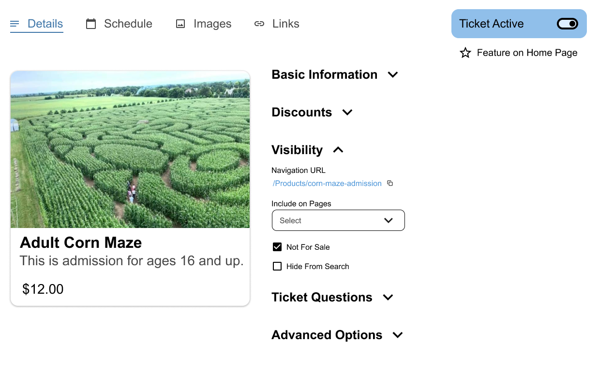

Farmpass
An event ticketing service for agritourism businesses, Farmpass services the unique needs of corn mazes and seasonal festivals around the country. However, after 8 years of added features it was in great need of rethinking. I worked to redesign the general look and feel of Farmpass, along with creating mockups of features yet to come. As it was an event ticketing platform, the look must blend into the brand of each company using it. Thus, it must be simple and universal, with a spare color palette and light feel.
Ticket Management
After so many years of new features the ticket management system had become unwieldy. Row after row of settings that were organized mostly by how recently they were added to the product. The reorganized interface includes collapsible sections of settings and a preview to show what your ticket looks like.
